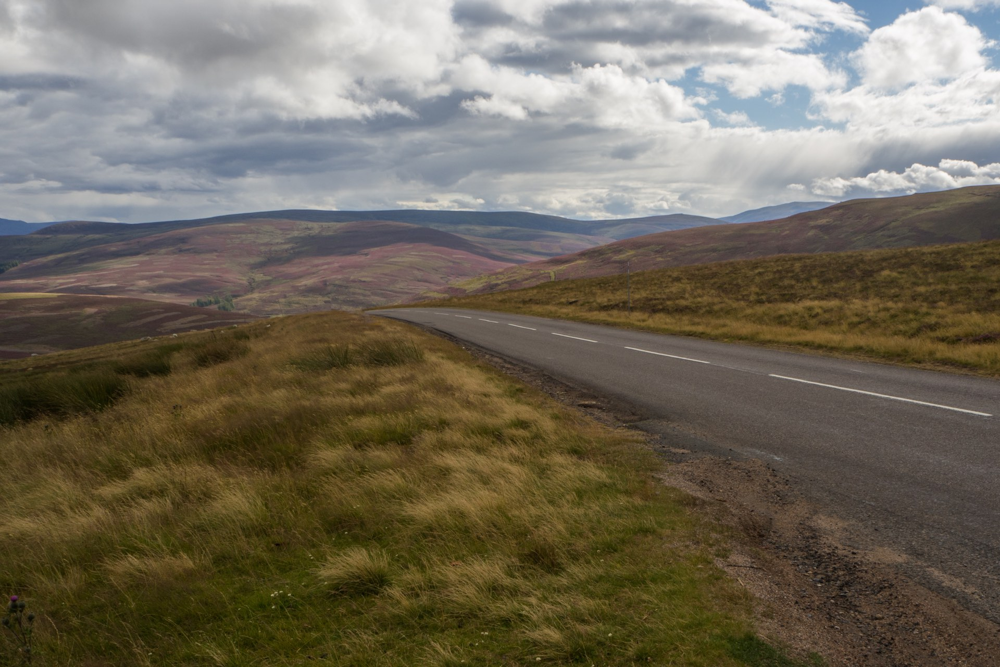
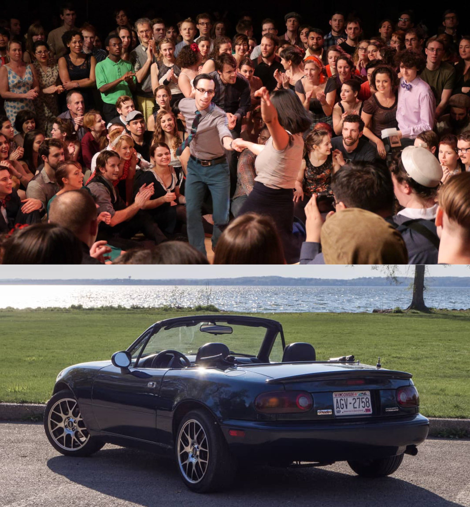

Hello! I am Scott Lucchini. I am an astrophysicist, photographer, programmer, car enthusiast, and dancer. I am currently a postdoctoral fellow at the Institute for Theory and Computation at the Harvard-Smithsonian Center for Astrophysics. I have significant experience in software development and programming through my physics and astronomy research as well as through my work at a software startup. In my free time, I enjoy architectural and landscape photography and working on and driving my 1995 Mazda Miata. I have also been swing dancing and tap dancing for many years and have taught dance classes of all levels at local and regional events.
ASTROPHYSICISTPHOTOGRAPHERDANCER
My research interests revolve around galaxy-scale numerical simulations. During my PhD I worked to understand the formation and evolution of the Magellanic Stream, a huge gaseous structure covering 200 degrees along the sky. The gas in this Stream originated in the Large and Small Magellanic Clouds, and was tidally stripped throughout their history interacting with each other and our Milky Way. We have shown that the inclusion of a warm circumgalactic medium around the LMC (motivated by its high mass) can account for the high ionization fraction that we observe in the Magellanic System today.
As an ITC Postdoctoral Fellow at the Harvard-Smithsonian Center for Astrophysics, I am using cosmological galaxy simulations to understand the other components of a galaxy's circumgalactic gas (see right). By comparing mock observations of simulated galaxies against data of our own Milky Way and other galaxies, we can learn about the role circumgalactic material plays in galaxy evolution as a whole.
As an ITC Postdoctoral Fellow at the Harvard-Smithsonian Center for Astrophysics, I am using cosmological galaxy simulations to understand the other components of a galaxy's circumgalactic gas (see right). By comparing mock observations of simulated galaxies against data of our own Milky Way and other galaxies, we can learn about the role circumgalactic material plays in galaxy evolution as a whole.

I began playing around with my parents' DSLR in middle school when I began to learn the basics of exposure and composition. In 2016, my wife and I moved to Edinburgh, Scotland where I completed my Master's degree and we traveled around Europe for a year. This was an amazing experience and I couldn't resist photographing the immense beauty and not only documenting our adventures but exploring photography as art. I use an Olympus OM-D E-M10 Mk II mirrorless camera and I am most interested in landscape and architectural photography.

In my spare time, I enjoy quite a range of activities. First of all, I began dancing Lindy Hop in 2010 through the University of Rochester Swing Dance Club. Lindy Hop is a form of swing dancing originating and flourishing in the Savoy Ballroom in Harlem, New York in the late 1920s and 30s. I dance and teach at local and regional events across the East Coast. Additionally, in September 2019 I bought a 1995 Mazda Miata which I have been very much enjoying working on and driving around (in the few months of decent weather here in New England). And my most recently completed woodworking project is an arcade machine based on a Raspberry PI. To learn more about Lindy Hop, and to follow along with my car and video game activies head over to my hobbies page.
